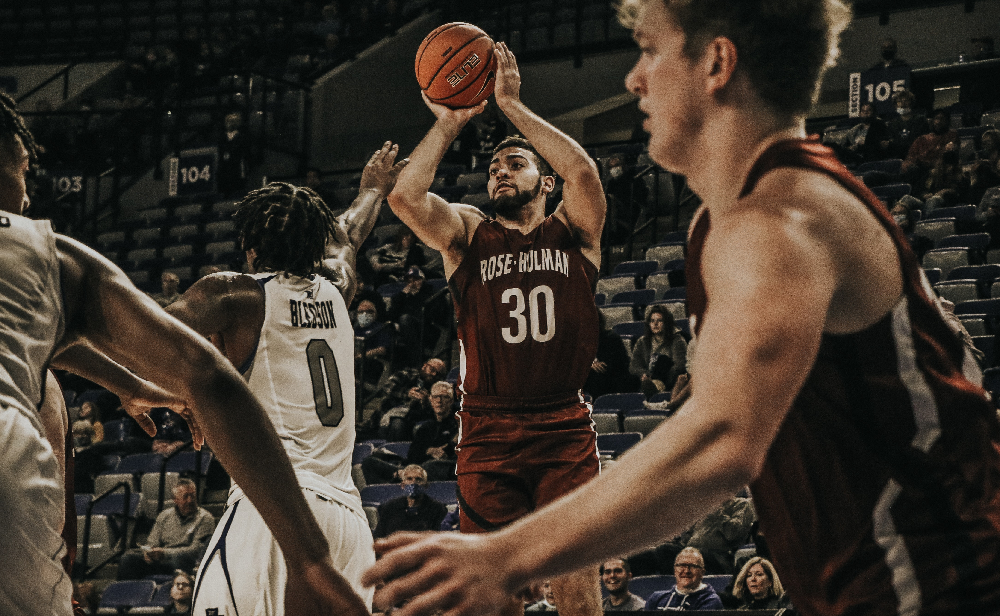
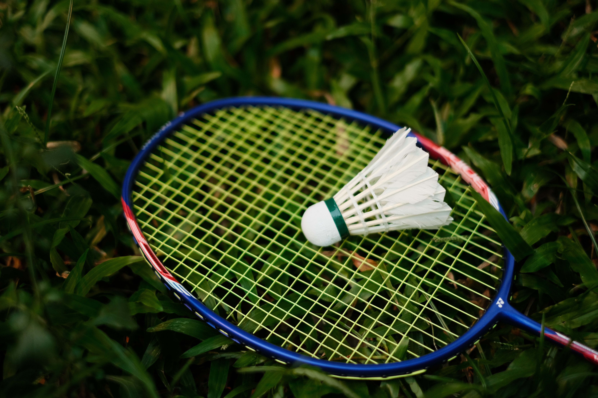

从小学第一次接触篮球开始，它便已经成为了我生命中不可或缺的一部分。每一次在球场上的突破、跳跃、投篮，都可以让我感受篮球那无与伦比的魅力。或许我的技术不够出色，速度不够出彩，但是我对篮球的热爱从来没有减少，也永远不会减少。Basketball Forever！
 我打羽毛球最初是因为我的妈妈。小时候她经常拉着我去小区的空地上打羽毛球，陪她锻炼身体。现在的我回家后，时不时的也会陪我的妈妈活动一下身体，而羽毛球也成为了我的一大爱好之一。
 和绝大部分男生一样，我也喜欢游戏。无论是英雄联盟还是CSGO，我都十分喜欢。我也加入我们学校的电竞社团，认识了许许多多志同道合（一起打游戏）的好朋友。
和绝大部分男生一样，我也喜欢游戏。无论是英雄联盟还是CSGO，我都十分喜欢。我也加入我们学校的电竞社团，认识了许许多多志同道合（一起打游戏）的好朋友。